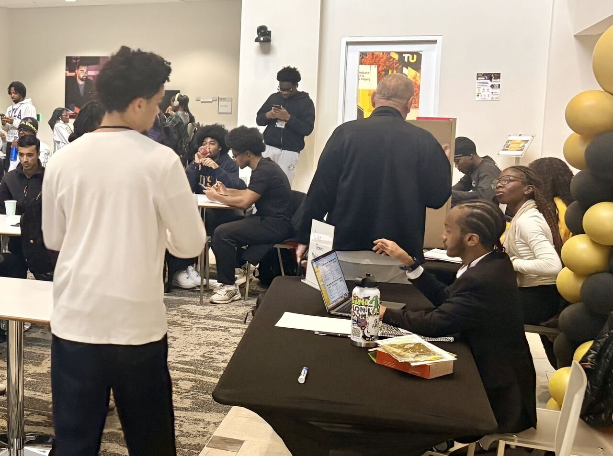
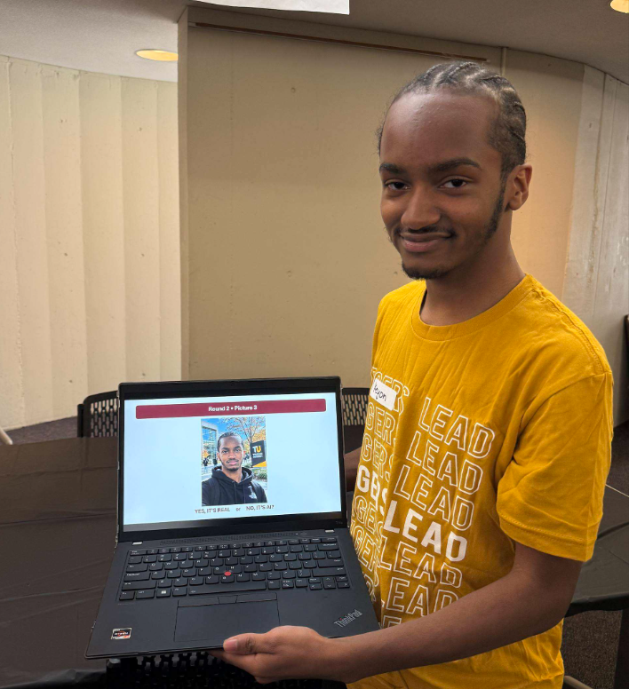
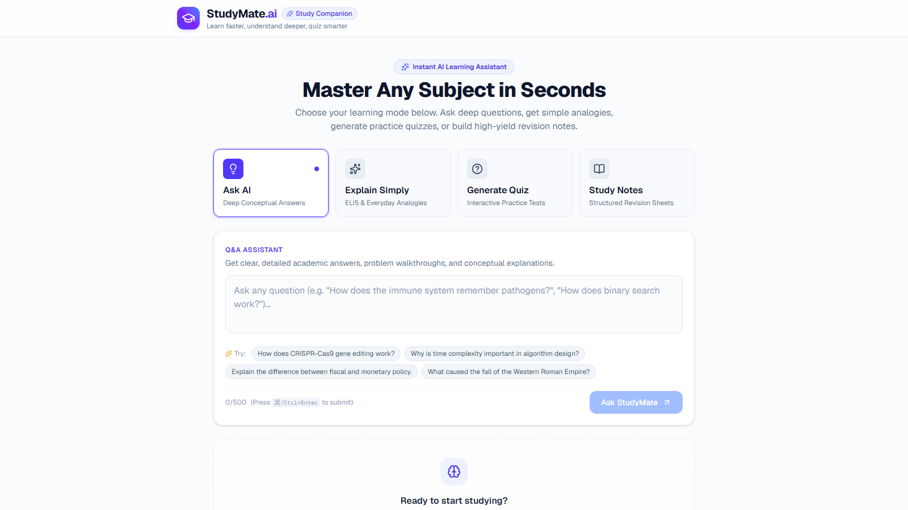
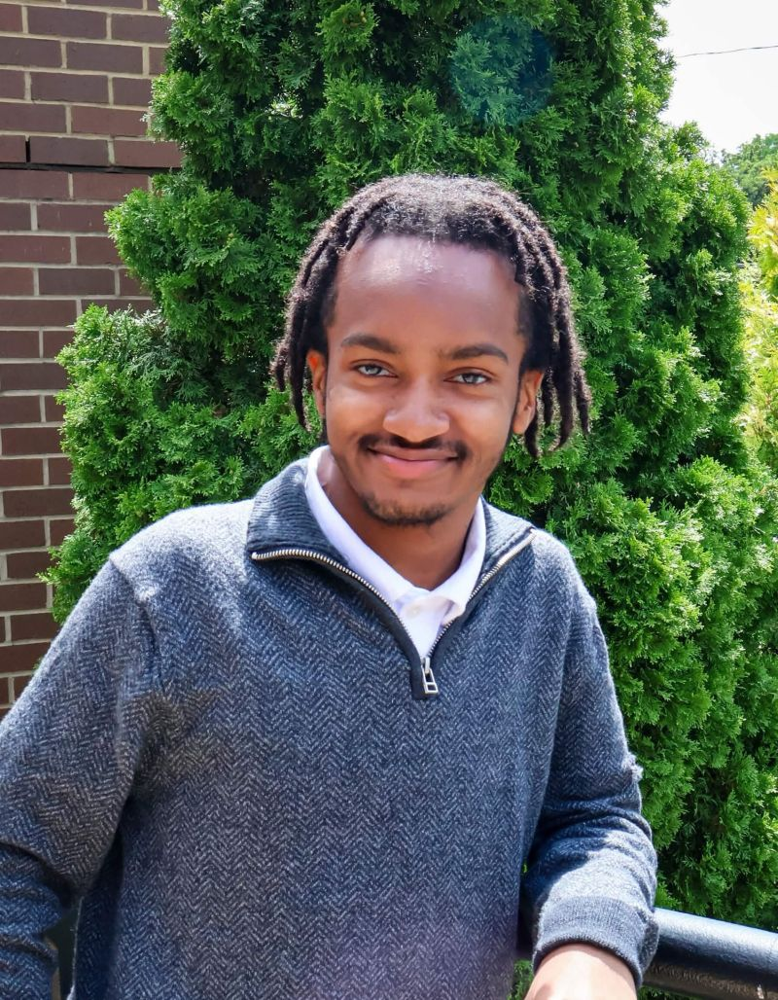
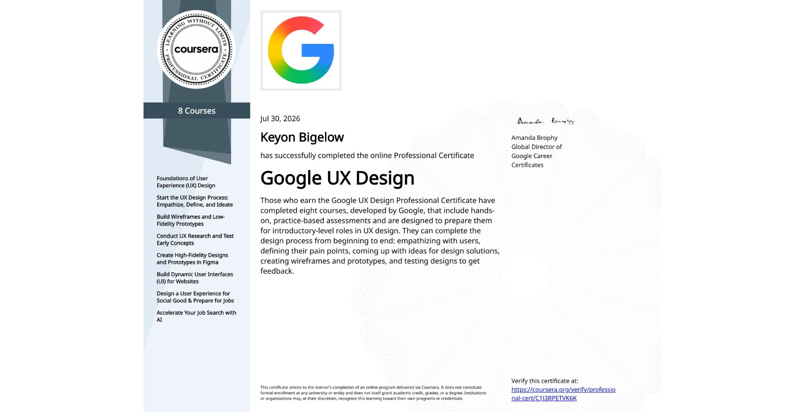
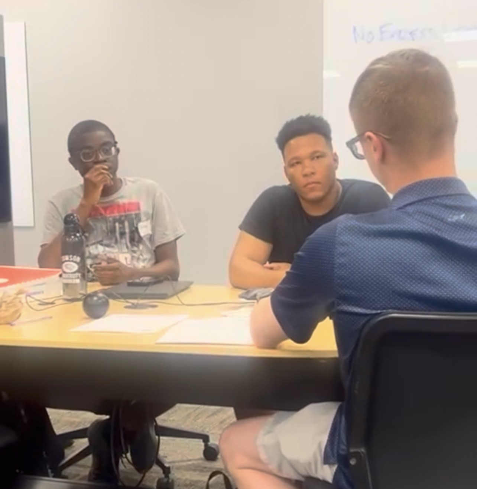
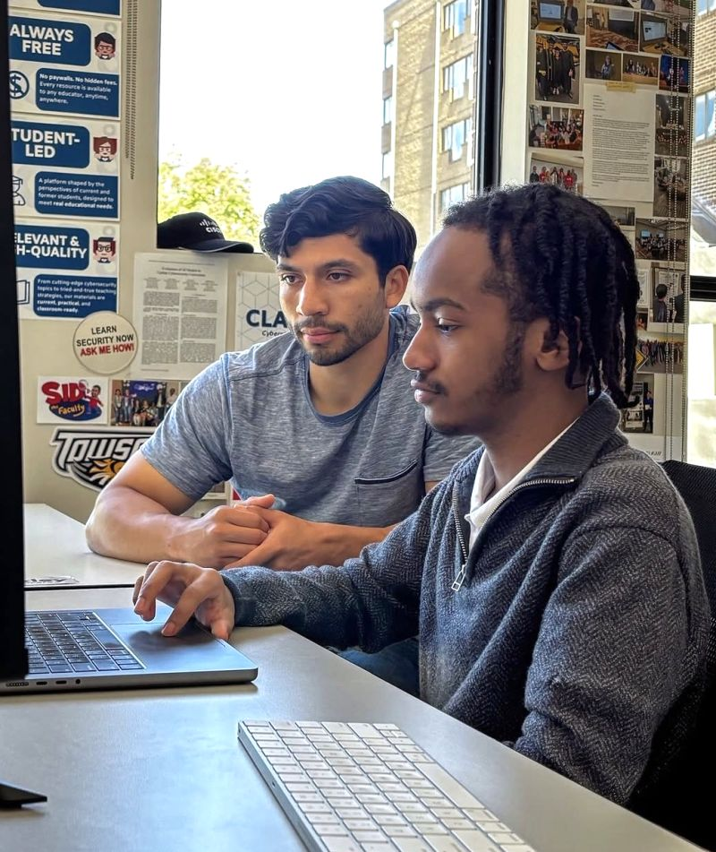
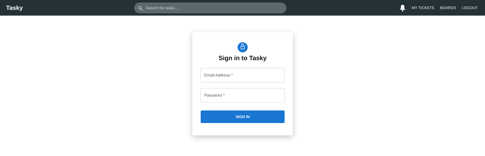
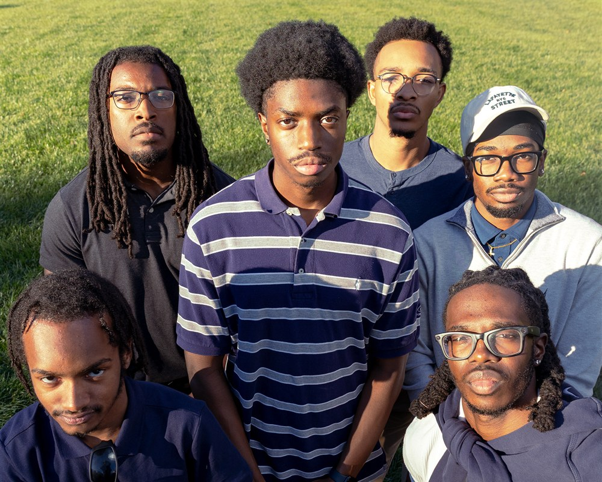
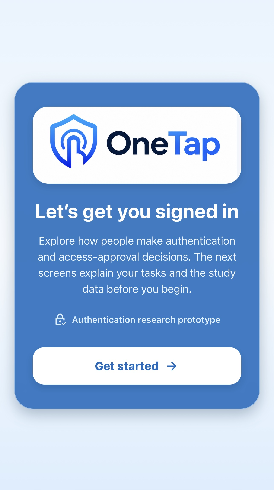

My Highlights
Milestones in my path through UX engineering, frontend development, and research.
-
CODE/CLASH
Helped organize Towson University’s 12-hour student hackathon, bringing together 55+ participants, 15 teams, and seven institutions. I served as judges liaison, supported event operations, and built the comic-inspired website participants used to explore the event and register.

-
Real or Fake: AI Literacy Workshop
Through Tigers Lead, I led the AI-literacy station within a digital-literacy workshop for adults 55 and older at Towson Library. I helped participants spot AI-generated content, verify what they saw online, and make safer decisions. It gave me a chance to practice the same skill I bring to OneTap: making technical guidance clear and usable for older adults.

-
Launched StudyMate.ai
Designed and deployed StudyMate.ai, an AI-powered study tool that helps students simplify concepts, generate quizzes, and organize notes. It marked my first experience taking an AI application from idea to a publicly accessible product.

-
Started My First Software Development Job
After completing my internship, I continued with SecurEd as a Software Developer, my first professional role in technology. The transition marked an important milestone: turning my experience with React, TypeScript, APIs, and collaborative development into continued professional work.

-
Completed the Google UX Design Certificate
Completed professional training in user research, wireframing, prototyping, usability testing, and accessible interface design, strengthening the design foundation I bring to frontend development.

-
Helped Host Towson’s Summer AI/ML Meetup Series
Through Bit Brothers, I helped Professor Bachman host four summer AI/ML meetups, supporting outreach and setup. The experience broadened my view of UX by showing how a welcoming environment can reduce barriers to exploring technical ideas.

-
Started My First Software Development Internship
I began my first professional role in technology as a Software Development Intern at SecurEd Inc. Working with React, TypeScript, APIs, and a production development team transformed software engineering from something I studied into something I practiced professionally.

-
Tasky
Collaborated with Bit Brothers to build Tasky, a MERN task-management platform for GoPanda’s product team to track tickets, assignments, and project progress.

-
Joined Bit Brothers
I joined Bit Brothers as a liaison and software developer, connecting students with campus organizations, faculty, and industry professionals. I also applied UX design to the organization’s websites and event materials, making its projects and opportunities clearer and more engaging for students.

-
OneTap
Started undergraduate research into how authentication choices, security feedback, and recovery options shape the login experience.
